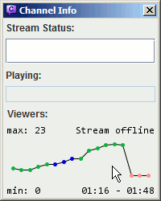
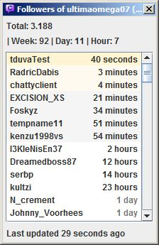

| General usage Chat basics Chat moderation / utility Chat customization Stream features |
Settings / Files
Miscellaneous
Guides
Also check out the official YouTube Channel with guides and stuff. |

When in a channel, Chatty shows some information about that channel
in the titlebar, e.g.:
[40|59] - GTA:SA Speedruns (Grand Theft Auto: San Andreas)
The first number is the number of people in the chat, the second is the viewercount, followed by the current stream title and game. Anything other than the number of people in the chat is requested from the Twitch API about every two minutes.
In addition, the titlebar will also show additional information, if enabled:
Sub for Subscriber-Only ModeSlow: <time> for SlowmodeR9k for R9Kbeta ModeYou can toggle showing some information under View - Options - Titlebar.
You can customize some shortcuts/hotkeys in the settings.
Default shortcuts which can't be changed:
The following are more default shortcuts, however these can be changed in the settings:
All command names are case-insensitive. Something like <parameter>
represents a required parameter which must be entered for the command to
work properly (you don't enter the surrounding < >,
they are just there to show it's a parameter). Equivalently [parameter]
represents an optional parameter.
Chat commands:
/me <message> - Send an action message (* nickname says something) to the channel/to <nick> [time] [reason] - Timeout the user with the given nickname for "time" seconds (time is optional)/timeout, /ban, /unban,
/slow, /slowoff,
/subscribers, /subscribersoff,
/clear, /mods, /host,
/unhost, /color
just like in normal Twitch Chat/join <channel> - Joins the given channel/part or /close - Leaves the current channel/reconnect - Disconnects and reconnects/fixMods - Temporarily fixes the list of mods (like
/mods but without showing the list of mods in chat)/ignore <user>, /unignore <user> - To ignore/unignore user (chat and whisper)/ignoreChat, /unignoreChat, /ignoreWhisper, /unignoreWhisper
- To ignore/unignore user only from chat/whispering youInfo commands:
/connection - Show info about the current connection/uptime - Shows how long Chatty has been running/appinfo - Shows Chatty uptime and current memory stats/dir - Show the directory the settings (and other stuff) are saved in/wdir - Show the current working directory/openDir - Opens the settings directory in your file browser/openWdir - Opens the current working directory in your file browser/testNotification [channel] - Display a test notification (optionally with channel,
which means right-clicking on the notification will join that channel)/myemotes - Show your subscriber emote codes (only works if you
have joined any channel before, this is only a quick info, better emote
integration maybe to be implemented later)/ffz, /ffzGlobal - Shows the FFZ channel emote codes for the current channel/global FFZ emotes/releaseinfo - Opens the help with the release informationOther commands:
/clearchat - Clears the current chat window of all text/setcolor <name> - Opens the usercolor settings
for the given name/echo <text> - Outputs the given text as a info message/copy - Copies the given text to the clipboardGUI commands:
/settings, /livestreams, /channeladmin,
/channelinfo, /search, /openFollowers,
/openSubscribers - Opens the according dialog/insert <text> - Inserts the given text into the input box at
the current caret position (can be useful for Custom Commands put
in a menu)/insertword <text> - Same as /insert,
but adds spaces so it's seperated from text before and after (if present)/openUrl <url> - Opens the given url/openUrlPrompt <url> - Open the given url after
showing a prompt for confirmationAdvanced commands (not recommended for use unless you know what you do):
/server <host>[:port] - Connect to a custom server/raw <command> - Send a raw command to the server/refresh <emoticons/badges/ffz/ffzglobal/bttvemotes/emotesets>
- Refresh the given data from it's respective API:
emoticons: Twitch Emotesbadges: Twitch Badges (current channel)ffz: FFZ Emotes (current channel)ffzglobal: Global FFZ Emotesbttvemotes: BTTV Emotes (global and current channel)emotesets: Association between emoteset and
channel name, to display Twitch Subemotes info correctly
(twitchemotes.com API)/changetoken <token> - Checks if the given token
is valid and sets it as new token if it isThe login data consists of a username (or account name) and most importantly an access token, which is sort of a revokable password that can also have different types of access associated with it, the ones usable for Chatty being:
Chat accessRead user infoEditor accessRun commercialsShow subscribersOnce requested from Twitch, the login data is stored locally on your computer along with the other settings of Chatty. Since Twitch gives out the access token per application, any access token for the same account requested with Chatty will be invalidated when you request a new access token. (This doesn't seem to be the case anymore.)
If getting login data fails, read this guide. If your login was determined invalid, read down below.
To allow Chatty more access than it already has (e.g. if you haven't
selected editor access before, but you want it now), you need to request
a new access token. Just go to <Main - Login..>,
delete the login and request it again with the necessary access.
To allow Chatty less access than it already has (e.g. you don't want it to have editor access anymore) you need to first revoke access completely in your Twitch Account Settings, then authorize access again. What will not work is just requesting a new token without selecting the now unwanted access. Twitch will always respond with a token that has at least as much access as the previous one.
The access token is saved in the login file in the settings
directory and can thus be accessed
by anyone having access to your computer.
It allows anyone who obtains it to chat in your name and access the other
things listed above (if you allowed it when getting the token). If you think
the token may have been compromised, please immediately go to your Twitch
Settings subsection
Connections
and revoke the accesss there. You can then request a new one for
which Twitch will ask you to authorize Chatty again.
If your login is determined invalid (either by checking it manually or when Chatty performed an automatic check), this can mean one of two things:
What happens when your login is no longer valid:
How to proceed:
<Main - Login..> to open the Login configuration
and click on [Verify login].<Main - Login..> to open the Login configuration
(unless you are already there), [Remove login] and create
a new login.There are a few special symbols that are used for users in chat. These are displayed in the userlist and - if usericons are disabled - also in chat.
FrankerFaceZ provides a custom mod icon for some channels. You can disable this in the settings if you want to keep the default one for all channels.
The userlist on the side of the channel shows all users currently considered to be in the channel.
In order to receive JOIN/PART messages, the setting Correct Userlist
under Settings - Advanced - Connection has to be enabled.
JOIN/PART messages are sent in batches and can be pretty delayed. So if someone joins the chat, he may only appear as joined after e.g. 15 seconds. If you want to use this to directly react on stream to someone joining, then including stream delay your reaction may be e.g. 30 seconds too late (possibly longer). The user may even have already left the channel again, but it just doesn't show yet.
The userlist can also take some time to initially load after you join a channel, or not load at all sometimes.
Also note that the userlist doesn't necessarily have to do with who watches your stream. A user can be logged into chat without watching the stream and vice versa. Overall, just don't take the userlist too seriously.
When you type in the inputbox, you can TAB-complete different types of things:
/ (using TAB, e.g. /sub then TAB to complete to /subscribers)Datsh then Shift-TAB to complete to DatSheffy)There are a couple of settings that change the behaviour of the TAB Completion.
How the TAB Completion process works:
The found matches are all ordered alphabetically, except for nickcompletion for which you can choose different types of sorting. By default nicknames use predictive sorting, which means users who recently wrote a message or highlighted you have a higher priority, increasing the chance that the users you want to address appear as the first few matches.
z in the editboxze_tt
with two other resultszMASKm by:
zMASKmzeblover
and Shift-TAB again to cycle to zMASKmdat in the editboxDatHass with two other resultsDatSheffy by:
DatSaunce
and TAB again to cycle to DatSheffyDatSheffyChatty provdes an input history for the chat input box that allows you to call up lines you entered previously, to make it easier to e.g. repeat commands with similiar parameters, repeat messages you send to chat or just look up what you wrote before. You can even save messages to the history that you haven't send yet to be able to send them later.
This does not apply anymore since Twitch changed their system to use IRCv3 capabilities. Joining several channels does not have any drawbacks.
If enabled, the history automatically saves channels you join and when you last joined them. By default channels expire from the history after 30 days of not joining them (can be changed).
You can also add channels from the history or any you enter manually to the favorites, which will always be kept until you remove them yourself.
The highlight system allows you to add words or phrases that make chat
messages appear in another color and appear in a seperate window, which you can
open under View - Highlights (you can clear the highlights window
in it's context menu).
The ignore system works very similiar to the highlight system, just that
it hides messages instead of highlighting them. They however also get
added to a seperated window, which you can open under View - Ignored
(you can clear the messagess in the window in it's context menu).
Right-click on a user in chat to open the User Context Menu, where you
can ignore or unignore that user from the Miscellaneous
submenu. You can view and edit the list of ignored users in the settings.
The color of a user is displayed in the User Info Dialog. Color Names are used where possible, HTML Color Codes are displayed in the Tooltip. Colors with asterisk (*) are default colors (the user hasn't set one or hasn't said anything during this session yet). A color in parentheses means it's the original color, while the other color is the corrected one that is actually displayed.
Chatty attempts to make colors more readable automatically by changing them to increase contrast. This doesn't work very well though, although it should work for extreme cases like white on white or black on black.
You can also specify custom colors for certain users or types of users in the settings. Custom colors are indicated by two asterisks (**) in the User Info Dialog.
Chatty supports the default Twitch Emoticons (Normal/Turbo/Subscriber), which should work the same as in normal Twitch Chat. It however also supports FrankerFaceZ, a custom set of emotes that is normally made available in normal Twitch Chat by use of browser extensions. It also supports BetterTTV emotes.
You can enable/disable Emoticons in general (displaying the icons instead
of the text) in the settings under Emoticons. You can also
ignore specific emotes in the same place in the settings.
In chat you can right-click on an emoticon to show some info about it.
Click on the emote code (e.g. FrankerZ) in the context menu
to insert the emote in the inputbox. If it is a subscriber emote, you
also have some more options.
Use Extra - Emoticons or press Ctrl-E to open
the Emote Dialog, which has various pages:
Favorites page lists emotes you have added to the favorites
via the Emote Context Menu (right-click on an emote in the dialog or chat and
choose Favorite, emotes that already are favorited can be
removed from favorites the same way).My Emotes page lists the emotes you paid for (Subemotes/Turbo).Channel page lists the emotes that are specific to the current channel
(FFZ and BTTV, if there are any). It also includes
the subscriber emotes of the current channel (if it has any), whether you
can use them or not (but it displays a message if you are not subscribed).Twitch page shows all free global Twitch emotesOther page shows all global FZZ/BTTV emotesClick on an emote to insert it into the current channel inputbox. Double-click on an emote to also close the Emote Dialog in the process, or press ESC or Ctrl-E to close it. Right-click on an emote to show a context menu with some more information/options.
Right-click on an emote and choose Show Details to open the
Detail View in the Emote Dialog, which shows the emote in different sizes
and some information about it. Clicking on an emote in chat also opens the
Detail View.
Note that you need to have joined at least one channel for your subemotes/turbo emotes to show up, because only then does Twitch Chat send that information to the client.
You can add your own local emotes by creating a file called emotes.txt
in the settings directory (enter /dir in Chatty to find the
settings directory, /openDir to directly open it). The
file can have one emote on each line, for example:
D: aww.png size:18x18 re:Gr[e|a]yface Kappa.png # Switching Kappa and MiniK Kappa http://static-cdn.jtvnw.net/emoticons/v1/3287/1.0 MiniK http://static-cdn.jtvnw.net/emoticons/v1/25/1.0 set:793 id:3287
This can be used to replace existing emotes, since custom emotes are checked first and thus take precedence. This is not intended to replace FFZ or BTTV emotes, just to help configure emotes to your personal preference. For example you could also add an image for you own name to have it highlighted in chat in a different way.
The syntax per line is (you can use as many spaces or TABs as seperators as you want):
[settings] <code> [settings] <image> [settings]
Settings can be in any of the shown places, but are always optional. Available settings are:
set:<setid> to specify a
Twitch emote set. This will only affect messages you write yourself.id:<emoteid> to specify a Twitch emote id to
replace. This will only affect incoming messages.chan:<channel> to restrict the emote to the
given channel.size:<width>x<height> to specify the
size of the emote (you can omit this if you want to use the image
size).Required:
re:
to specify a regular expression. Otherwise it is interpreted as plain text
(the same as regular Twitch emotes, case-sensitive and usually separated
by space from other characters).emotes.txt in), so just put them in the same directory.
You should also be able to use URLs to load the image from the internet.Lines starting with # are ignored and can be used for comments.
The emotes.txt file is loaded when you start Chatty, so if you edit the file
while Chatty is running, you have to use the /reloadCustomEmotes
command for it to take effect.
Emote images may be cached, so if you change the image, you MAY have to
clear the cache (/clearemotecache CUSTOM).
This has been moved to it's own page
With this feature, you can select a user in chat with keyboard shortcuts (if the window is active). So you can e.g. timeout a user with your keyboard alone.
Press Ctrl-Space (can be changed in the settings) to enter this mode. If there are any user messages in chat, then the newest message will get another background color which shows that it is selected. In that mode, the focus is on the textpane, which enables more shortcuts:
When you move up and down, it actually switches to the next user instead of to the next line. So if the same user send 10 messages in a row, it will jump to the first message of the next user above it.
In addition to the currently selected message, it will also highlight all other messages by the same user. You can also hold AltGr and click on a username in chat to highlight all that users messages (and enter User Selection Mode).
You can also click and hold in an empty area of the textpane, which puts and holds the focus there, so you can just use the shortcuts in the list above to enter the User Selection Mode and switch between messages. However if you let go of the mouse key, it will immediately leave the mode again.
You can also configure global hotkeys with some User Selection actions. However, if the focus is not on the chat, then the usual shortcuts won't work, so you'll have to define additional global hotkeys to e.g. timeout the currently selected user. See the hotkey settings for what actions are available.
Stream Chat is a seperate dialog, opened via the /openStreamChat
command or the Extra menu, that can have chat messages from one or several
channels redirected to it (only regular chat messages, so no JOINS/PARTS, info messages
and so on). It also can have a message timeout set, so messages will
disappear after a certain amount of seconds.
The idea is to capture Stream Chat to display chat on stream and messages will only be displayed if the chat has been recently active. So this doesn't really make a lot of sense for busier channels, unless you simply prefer to only have regular messages or to have a seperate dialog for the capture.
You need to add the channel which messages are redirected to the
Stream Chat dialog before anything will appear. The setting you are required
to change is streamChatChannels,
which is a list setting giving you different ways of editing it:
/set streamChatChannels #<channel> - To set
the channel to only this one/add streamChatChannels #<channel> - To add
a channel in addition to the ones already set/remove streamChatChannels #<channel> - To remove
a channel from the listCheck out other settings that are also edited with setting commands.
In addition, make sure you have Settings - Window - Restore dialogs
set to at least Restore dialogs from last session in order
to keep the position/size of the Stream Chat dialog between sessions.
/openStreamChat - Opens the Stream Chat dialog/setStreamChatSize <width>x<height> - Set the exact size of the Stream Chat dialog in pixels/getStreamChatSize - Shows the size of the Stream Chat dialog in pixels/clearStreamChat - Removes all messages/streamChatTest [message] - Adds a test message to the Stream Chat dialog, if you don't specify a message
a default one is usedYou can give people in chat custom names that will appear in chat and in the userlist instead of the regular Twitch username and in the User Info Dialog in addition to the regular Twitch username. In other places (like the User Context Menu or auto-completion) the regular Twitch username is used.
The following commands are used to set custom names:
/setname <name> <custom name> - to set a custom name/resetname <name> - to remove a custom nameIf enabled in the settings under Main - Settings - Chat you
can stop the chat from scrolling down while you move the mouse over chat.
This can prevent misclicks when the chat is moving. The chat will resume
scrolling down as soon as you stop moving the mouse or move it out of
the chat area. When the chat is already paused, you can also hold
Ctrl to keep the chat paused even without moving the mouse.
Optionally, you can set it to require Ctrl being pressed in conjunction with moving the mouse to initiate pausing. You can let go of Ctrl as soon as pausing is started and it will stay paused as long as you move the mouse inside the chat area.
A little popup in the top-right will indicate that the chat is paused.
Please note: This only works when the chat area is already filled, so the scrollbar is actually used. In addition, there may be instances where something you want to click will move anyway, for example if a message is deleted due to a timeout/ban, causing other messages to move.
Another way of preventing scrolling down is scrolling up. Once you are manually scrolled up, chat will stop scrolling down automatically. However messages may still be removed from the buffer causing the chat to move despite it not actively scrolling down. It will stop removing messages to get moving to a minimum as long as you keep holding Ctrl.
A certain time after not moving the scroll position, it will scroll down automatically (unless Ctrl is still being pressed).
Holding Ctrl and clicking on a user in chat can execute a ban
or timeout on that user. Enable this feature and define what it does in
the settings (Main - Settings - Chat).
It is recommended to enable the pause chat feature if you are using this, or else misclicks could be very common.
The Channel Info Dialog shows the current stream status of the active stream. The data is requested from the Twitch API in a semi-regular interval, so it can take some time to update.
If the stream is online, the Online: 1h 30m
shows how long ago the stream was started. That time comes directly from the
Twitch API, so it is able to show the correct online time, even if you started
Chatty after the stream started.
If there is a time in parentheses
(like 1h 30m (2h)), then that time denotes how long the stream
was online, but including small offline periods (PICNICs) of at most 10 minutes,
which means that this time is more of a guess of what might be expected as
stream online time and also depends on when Chatty got the data (if you join
the channel after a PICNIC, then it won't include the time before, because it
never received the data for it).
The History is a graph that shows the development of the viewers of the currently active channel and also indicates stream status changes (online/offline/title/game) by different colors.
Hover over points to display the stream status and viewercount at that time. Right-click for a context-menu.
|
There are two ways to change which time range is being displayed:
|
 |
The History is recorded while you have the channel open in Chatty as well as for all followed channels, if you have that feature enabled.
The shown data usually fits to the available vertical space
(so if the min/max viewercounts were 341/403 then only this
range is shown). If you choose Toggle Vertical in
the context-menu, you can switch between the shown range
(min/max) and the full range (0-max).
Chatty can show Notifications when the status of a stream changes.
There is also a Live Streams window (Channels - Live Channels)
that shows the currently live streams. Both these features always include channels you have
joined and - if enabled - channels you have followed. Streams that are
no longer online, or whose channels you have left and you don't follow,
are added to a list that you can open in the Live Streams window context
menu (Removed streams..).
Chatty Notifications are little info boxes that can be shown for stream status changes and highlighted messages. When you left-click on a notification it is closed immediately, right-clicking closes it as well and in addition also joins the associated channel.
Chatty can request a list of streams you follow on a regular basis, so you have both an overview of currently live streams as well as be informed about status changes (offline -> online, title change, game change). This is always available for streams whose channels you have joined in chat, but with this feature enabled, this works for all streams you follow even without joining their channel.
This feature requires Read user info access, so Chatty can
request your followed streams. Read the section about login
to learn more about login data and access.
You can enable/disable this feature in the Settings under Notifications.
This has been moved to it's own page
You can open a list of the Followers of a channel by joining that channel
and then opening the Followers Dialog via Extra - Followers.
It always opens on the currently active channel, or if you are in no channel
at all, your own channel.
You can open a list of your Subscribers by opening the Subscribers Dialog
via Extra - Subscribers. It always opens on your own channel,
because you can only display the Subscribers of your own channel. If you don't
have any Subscribers, it will simply show an empty list (and an error). You
also need to have selected the necessary access when
requesting login data.
You can save the current list to a file by right-clicking on the dialog (not the list) and selecting the format.
Both the Followers and Subscribers Dialog otherwise work in pretty much the same way. Data is only requested as long as you have the dialog open. It is requested in a semi-regular interval and then displays that data in the list (and some stats).
If followers/following is mentioned below, then the same applies for subscribers/subscribing in the appropriate dialog.
|
At the top it shows some stats:
There are different background colors for some entries:
The time has different colors for older entries:
At the bottom, it shows approximately how long ago data was last received, or a short error message if an error occured. |
 |
Everything that determines whether a follower is new or a refollow is saved per session. So if you restart Chatty, it assumes that all followers except from the first request are new. So if you start Chatty, open the Followers Dialog on your channel, it will load the followers for the first time and show none of them as new. Now if it updates a minute later, and there are users it hasn't seen as having followed before, then it assumes these users as new followers.
Now a user of course might have been a follower for a year, then unfollow and follow again. Chances are that Chatty won't notice that and assume a new follower. What it however does is that it only shows each user as new follower once per session. So if someone follows and Chatty shows that user as a new follower, then that user unfollows and follows again, Chatty will notice that the first and the second follow time are different, and will show this user as a refollow (the name slightly grey).
So this basicially just prevents the same user from e.g. making a sound go off (if you have that enabled) several times just by refollowing several times. At most that will happen once per session. Other than that the data is mostly shown just as it comes in from Twitch. It will still show refollows on the top of the list.
Chatty can help you with creating Highlights of your stream by recording the stream time (how long the stream has been online) using a command or hotkey. When you add a Stream Highlight in Chatty, it is written to a file which you can then view later.
The following commands are available:
/addStreamHighlight [comment] - Adds a highlight at
the current time, with a comment if you want to./openStreamHighlights - Opens the file where the stream
highlights are stored in your default text editor.You can also add a hotkey to add stream highlights, so you can also do it yourself while streaming out of a game (given that global hotkeys work in the game).
The highlights are written to the file stream_highlights.txt
in the exported subfolder of the settings directory (which
you can open with the /openDir and show with the
/dir command).
You can also let your moderators add stream highlights
(!addStreamHighlight [comment]), but you first have to
change some settings:
/set streamHighlightChannel #<yourchannelname> to
allow moderators in the given channel to run the command/set streamHighlightChannelRespond 1 to send a response to
chat when the mod command is used (otherwise the message is just shown locally)/set streamHighlightCommand !highlight to set !highlight
as mod commandBoth the ignore joins/parts and Twitch Client Version 3 option have been removed. You can now disable the Correct Userlist setting to not get any joins/parts if you think it could improve performance.
Using the /proc command you can start processes directly out
of Chatty. An example of where this is already integrated into Chatty is
starting Livestreamer, however this is a more basic implementation.
This is probably only interesting for advanced users.
/proc exec <command and parameters> - Try to
start a process on your computer./proc list - List of processes currently running out of
Chatty./proc kill <id> - Forcefully end the process with
the given id (get the id from the list of processes).Example: /proc exec notepad H:\hl.txt will start Notepad
and open the given file.
Note: Commands and output of the process is logged in the Debug Log which
is written to file and output to Extra - Debug window.
There are a few options you can launch Chatty with, that will override settings loaded from the settings file. You need to run Chatty from the commandline or Create a shortcut to use these.
These need to be defined after the Chatty.jar, for example:
javaw -jar Chatty.jar -channel lotsofs
-server <host/ip>-port <port>-user <username>-password [password]-token [token]-connect-channel <channel>-ds-cd-set:<settingName> <setting value>/set
command (see Setting Commands).-single [port]-single parameter with the same port (or
no port to use the default one) for all instances that you want to
have run in the same single instance mode.-channel parameter is used when
forwarded to an already running instance (joining the channel).This has been moved to it's own page
Settings are loaded from files when Chatty is started and saved into files
once it is closed. By default these files are saved in a subfolder
.chatty of your user directory. You can also use the
-cd commandline parameter to use the current working
directory instead. You can find out which folder is used by entering the
/dir command.
Since Version 0.4 of Chatty, the settings are no longer saved in a single
settings-file, but instead several files:
login: Contains the login data, including the access
token, which should be kept confidential.favoritesAndHistory: Contains channel history and
favorites, as well as game favorites.settings: The main file, which contains all customizations
made to Chatty that should not be confidential or private.statusPresets: Contains status (title/game) presets
from the Admin Dialog.If you are referring to a specific version of Chatty, please provide the
actual version number, which you can find on the top of the main help page in Chatty
(this one if you are reading this in Chatty, otherwise go to Chatty and open
Help - About/Help or press F1).
Some of the resources that were helpful in the development of this program:
Chatty is using a few libraries/resources made freely available by others:
This application (except for the parts mentioned in the previous paragraph) is released under the MIT License.
Copyright (c) 2014 tduva Permission is hereby granted, free of charge, to any person obtaining a copy of this software and associated documentation files (the "Software"), to deal in the Software without restriction, including without limitation the rights to use, copy, modify, merge, publish, distribute, sublicense, and/or sell copies of the Software, and to permit persons to whom the Software is furnished to do so, subject to the following conditions: The above copyright notice and this permission notice shall be included in all copies or substantial portions of the Software. THE SOFTWARE IS PROVIDED "AS IS", WITHOUT WARRANTY OF ANY KIND, EXPRESS OR IMPLIED, INCLUDING BUT NOT LIMITED TO THE WARRANTIES OF MERCHANTABILITY, FITNESS FOR A PARTICULAR PURPOSE AND NONINFRINGEMENT. IN NO EVENT SHALL THE AUTHORS OR COPYRIGHT HOLDERS BE LIABLE FOR ANY CLAIM, DAMAGES OR OTHER LIABILITY, WHETHER IN AN ACTION OF CONTRACT, TORT OR OTHERWISE, ARISING FROM, OUT OF OR IN CONNECTION WITH THE SOFTWARE OR THE USE OR OTHER DEALINGS IN THE SOFTWARE.